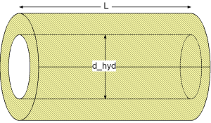

Calculation of pressure loss in a straight pipe for turbulent flow regime of single-phase fluid flow only considering surface roughness.

dp = lambda_FRI * (L/d_hyd) * (rho/2) * velocity^2
with
| lambda_FRI | as Darcy friction factor [-]. |
| L | as length of straight pipe [m], |
| d_hyd | as hydraulic diameter of straight pipe [m], |
| rho | as density of fluid [kg/m3], |
| velocity | as mean velocity [m/s]. |
The Darcy friction factor lambda_FRI for a straight pipe in the turbulent regime can be calculated for a smooth surface (Blasius law) or a rough surface (Colebrook-White law).
Smooth surface (roughness =1) w.r.t. Blasius law in the turbulent regime according to [Idelchik 2006, p. 77, sec. 15]:
lambda_FRI = 0.3164*Re^(-0.25)
with
| lambda_FRI | as Darcy friction factor [-]. |
| Re | as Reynolds number [-]. |
Note that the Darcy friction factor lambda_FRI for smooth straight pipes in the turbulent regime is independent of the surface roughness K .
Rough surface (roughness =2) w.r.t. Colebrook-White law in the turbulent regime according to [Miller 1984, p. 191, eq. 8.4]:
lambda_FRI = 0.25/{lg[k/(3.7*d_hyd) + 5.74/(Re)^0.9]}^2
with
| d_hyd | as hydraulic diameter [-], |
| k= K/d_hyd | as relative roughness [-], |
| K | as roughness (average height of surface asperities [m]. |
| lambda_FRI | as Darcy friction factor [-], |
| Re | as Reynolds number [-]. |
The Darcy friction factor lambda_FRI in dependence of Reynolds number for different values of relative roughness k is shown in the figure below.
Note that this pressure loss function shall not be used for the modelling outside of the turbulent flow regime at Re < 4e3 even though it could be used for that.
If the overall flow regime shall be modelled, the pressure loss function dp_overall can be used.